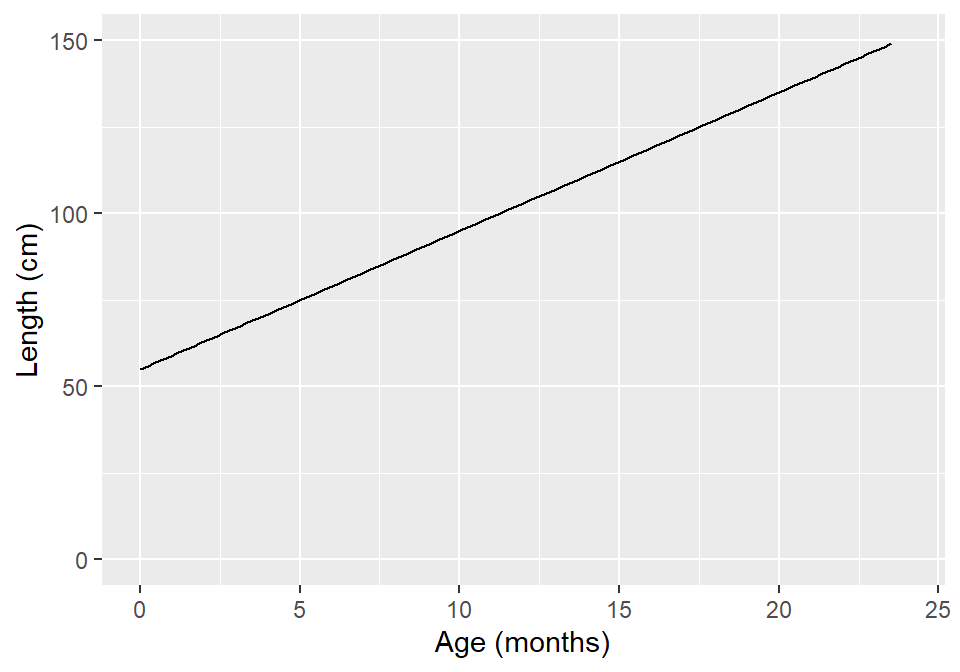
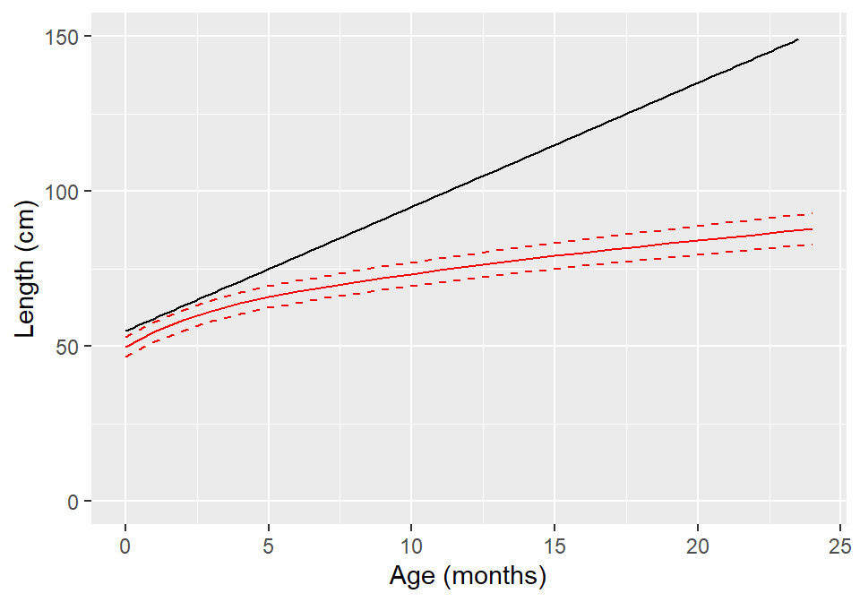

Models
Data Analysis for Psychology in R 1
Tom Booth
Click for handout
Today
- Introduce the idea of models in statistics
- Think through models as functions
- Consider how models, plots and functions relate.
- Admin: I want to talk through the lab tests
Learning objectives
- Understand the general concept of a model.
- Understand how a model relates to a function.
- Understand how a model provides predictions about the world
What is a model?
- Pretty much all statistics is about models.
- A model is a formal representation of a system.
- Put another way, a model is an idea about the way the world is.
Models in psychology
- Rescorla-Wagner Model: classical conditioning
\[ \Delta V_{X}^{n+1} = \alpha_X \beta(\lambda - V_{tot}) \]
- \(\Delta V_{X}^{n+1}\) = change in strength of an association.
- \(\alpha_x\) = Salience of X (CS)
- \(\beta\) = salience of US
- \(\lambda\) = maximum possible conditioning for US
- \(V_{tot}\) = strength between CS and US for all possible stimuli
Models in Psychology
\[ \Delta V_{X}^{n+1} = \alpha_X \beta(\lambda - V_{tot}) \]
- As a function:
\[ f(\alpha, \beta, \lambda, z = [V_{tot}]) = \alpha_X \beta(\lambda - V_{tot}) \]
A model as a function
- We tend to represent mathematical models as functions.
- which can be very helpful.
- It allows for the precise specification about what is important (arguments) and what those things do (operations)
- This leads to predictions
- And these predictions can be tested.
An Example
- To think through these relations, we can use a simpler example.
- Suppose I have a model for growth of babies.
\[ Length = 55 + 4*month \]
Visualizing a model
Visualizing a model

Models as “a state of the world”
- Let’s suppose my model is true.
- That is, it is a perfect representation of how babies grow.
- What are the implications of this?
Models and predictions
- My models creates predictions.
- IF my model is a true representation of the world, THEN data from the world should closely match my predictions.
- Sometimes this is referred to as my model matching the data generation process
Predictions and data
Predictions and data
| Age | Prediction |
|---|---|
| 10.00 | 95 |
| 10.25 | 96 |
| 10.50 | 97 |
| 10.75 | 98 |
| 11.00 | 99 |
| 11.25 | 100 |
| 11.50 | 101 |
| 11.75 | 102 |
| 12.00 | 103 |
- Our predictions are points which fall on our line (representing the model, as a function)
Predictions and data

- Consider the predictions when the children get a lot older…
Predictions and data
Predictions and data
| Age | Year | Prediction | Predction_M |
|---|---|---|---|
| 216 | 18 | 919 | 9.19 |
| 228 | 19 | 967 | 9.67 |
| 240 | 20 | 1015 | 10.15 |
| 252 | 21 | 1063 | 10.63 |
| 264 | 22 | 1111 | 11.11 |
| 276 | 23 | 1159 | 11.59 |
| 288 | 24 | 1207 | 12.07 |
| 300 | 25 | 1255 | 12.55 |
- What do you think this would mean for our actual data?
- Will the data fall on the line?
How good is my model?
- How might we judge how good our model is?
- Model is represented as a function
- We see that as a line (or surface if we have more things to consider)
- That yields predictions (or values we expect if our model is true)
- We can collect data
- If the predictions do not match the data (points deviate from our line), that says something about our model.
Models and Statistics
- In statistics we (roughly) follow this process.
- We define a model that represents one state of the world (probabilistically)
- We then collect data to compare to it.
- These comparisons lead us to make inferences about how the world actually is, by comparison to a world that we specify by our model.
Length & Age is non-linear
df <- read_csv("length_age.csv", col_names = c("Month", "Mean", "SD", "Lower", "Upper"))
m1 +
geom_line(data = df, aes(x=Month, y = Mean), colour = "red") +
geom_line(data = df, aes(x=Month, y = Lower), colour = "red", linetype = "dashed") +
geom_line(data = df, aes(x=Month, y = Upper), colour = "red", linetype = "dashed")Length & Age is non-linear

- Our red line is plotted based on the mean length for different ages real data
Lab tests
What to expect…
- You will be assigned to either the first or second hour of your normal lab.
- You will come in, have 10 minutes to settle, open computers etc.
- You will open an .rmd file that will contain questions and empty code chunks
- You will need to write some R-code to answer the question
- You will knit your .rmd file
- And hand in the .rmd and the knitted file via LEARN
Types of question
- Question will draw on the content of the course up to the point where the test.
- They will focus mainly on recent material, but may have some things repeated (like sorting data)
- Examples for test 1:
- Make a plot
- Produce summary statistics for variable X
- How many subjects are there in the data that meet conditions A, B and C
- There will be 4 or 5 questions in each lab test.
- The last of which will be hard.
Final things
- If you have adjustments, you will have extra time as if this is an exam.
- You can have all your notes and the internet
- The admin for the test in week 10 will happen next week
- There will be a practice submission during the lab before the first test.
Tasks for this week…
- Finish any existing tasks from labs.
- Reading: See LEARN
- Quiz 7 on functions
- This quiz counts
- Live now (as of Monday at 09:00).
- Closes Sunday at 17:00
Recommendations of the week
- Podcast: Another In Our Time
- Recipe: Breakfast Egg Muffins
- Book: SPQR, Mary Beard
- Thing to do: St. Giles Cathedral
- Coffee/food Place: Miros Portobello Beach